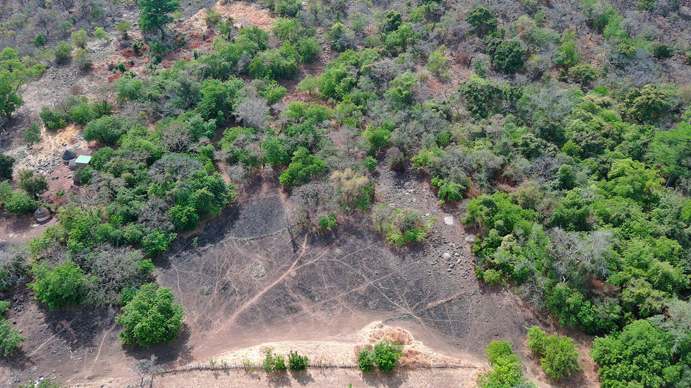
Étant situé dans la région de Bandafassi au Sénégal, le climat est chaud et sec, mais il y a tout de même une végétation variée y pousse. L’école des métiers d’art est pensée pour permettre le travail et les apprentissages sur la flore du site. L'objectif est de faire un lieu où les espaces sont ouverts et où chaque pièce est liée à son jardin. Les étudiants et les locaux pourraient y planter les semances qui leur sont nécessaires et ils pourraient les cueillir et les travailler à même le bâtiment. Puis, avec le temps, les jardins prendraient de plus en plus d’espace dans la ville jusqu’à habiter les friches de Bandafassi.
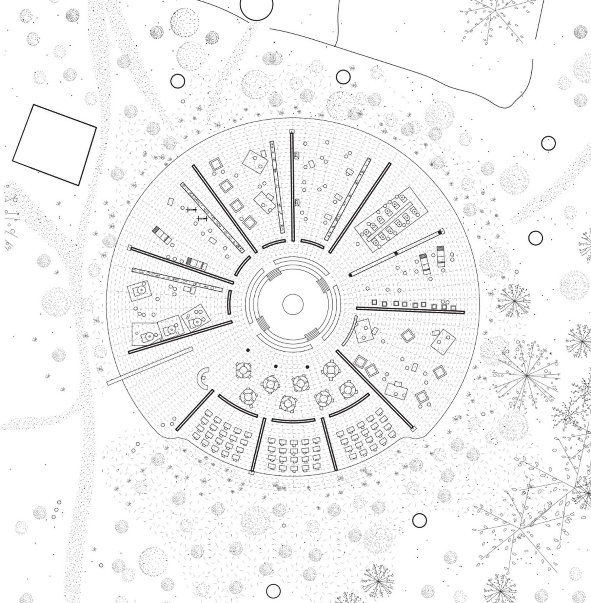
Les espaces ne sont ni intérieures, ni extérieures, mais couverts, laissant ainsi le vent y circuler. La toiture dépasse les murs pour offrir de l’ombre dans les classes et permettant d’empêcher la pluie d’entrer trop profondément dans le bâtiment. De plus, au Sénégal, il y a une saison des pluies. Donc, l’angle de la toiture permet à l’eau d’être mise en scène dans l'amphithéatre central et récupée dans un réservoir.
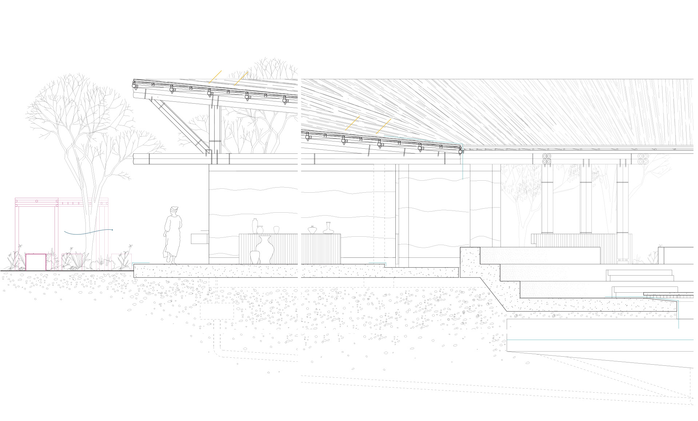
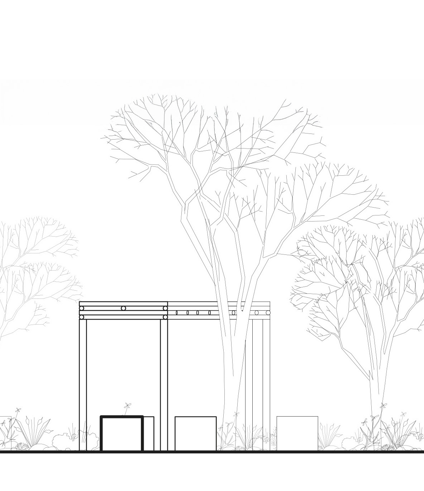
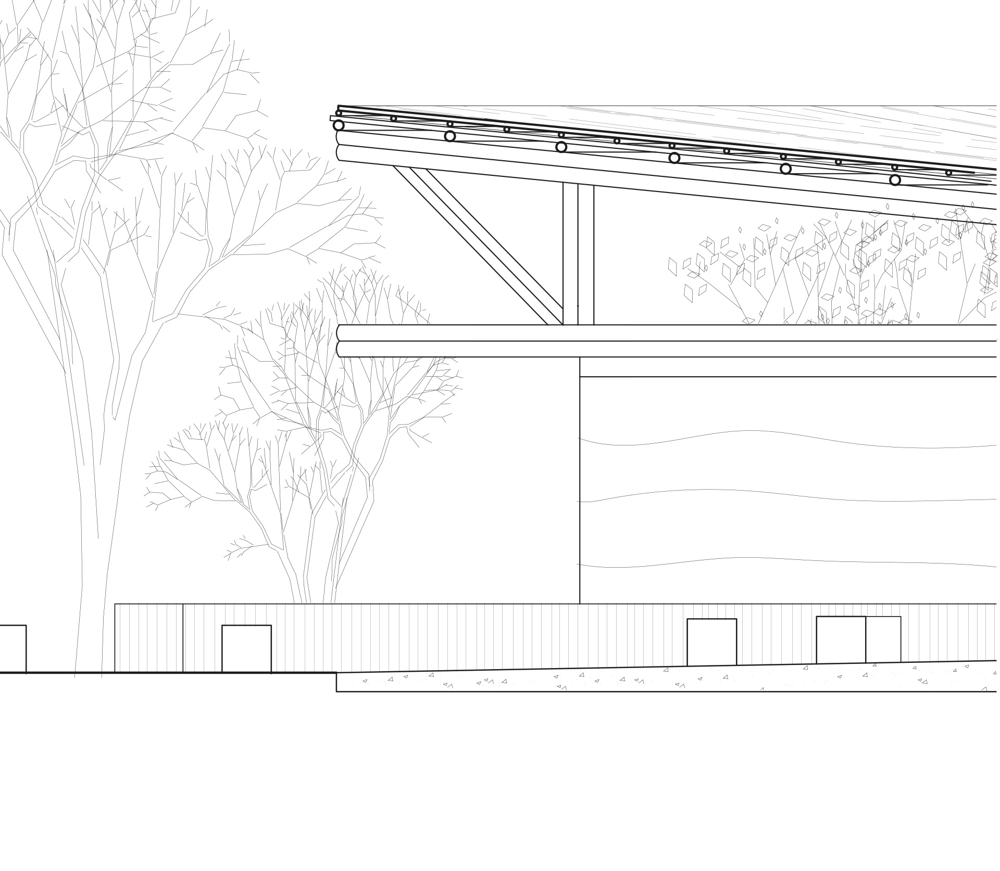
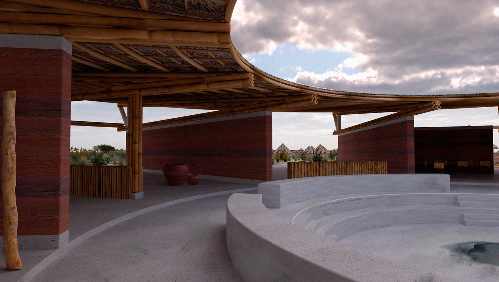
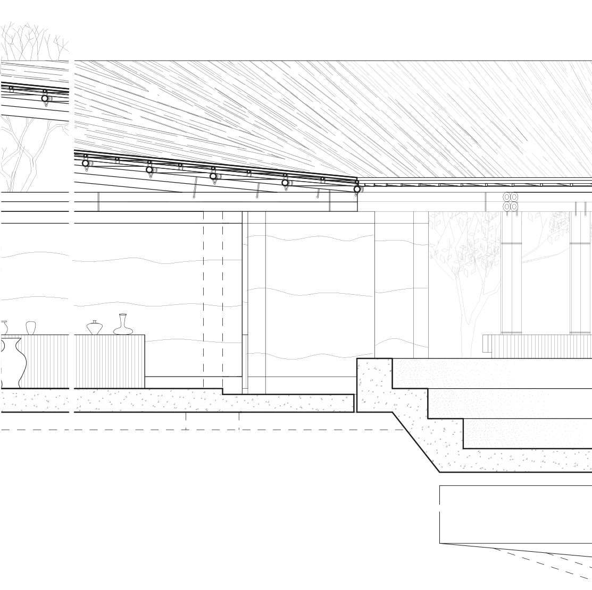

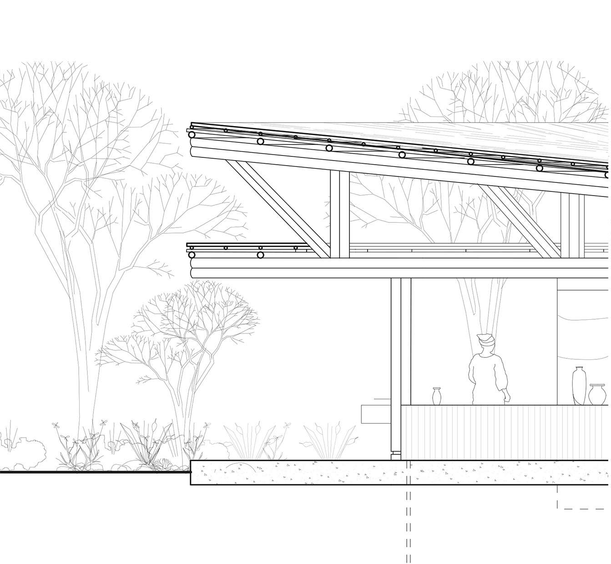
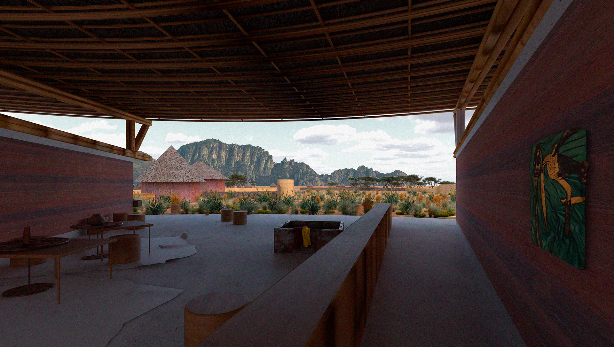
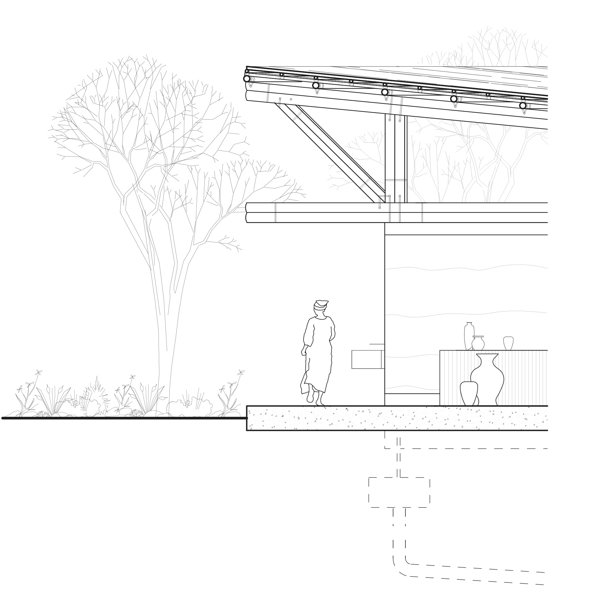
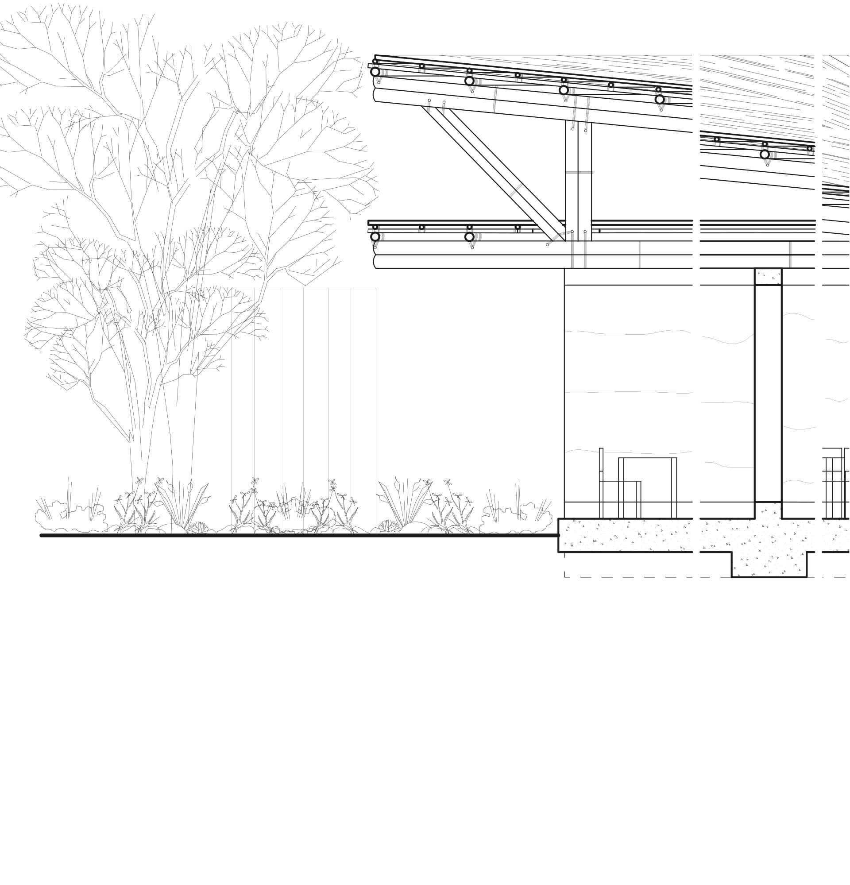
Contexte
Atelier IV
Université Laval, ARC-2012
Hiver 2025
Rémi Hovington Jr